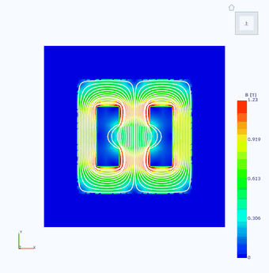
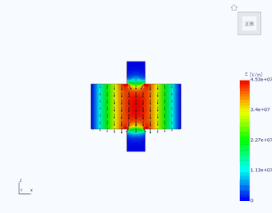
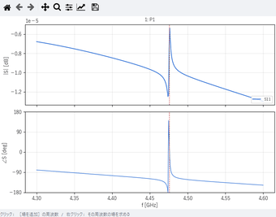
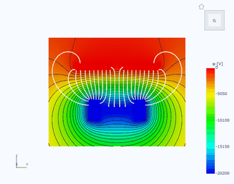
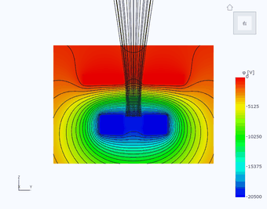
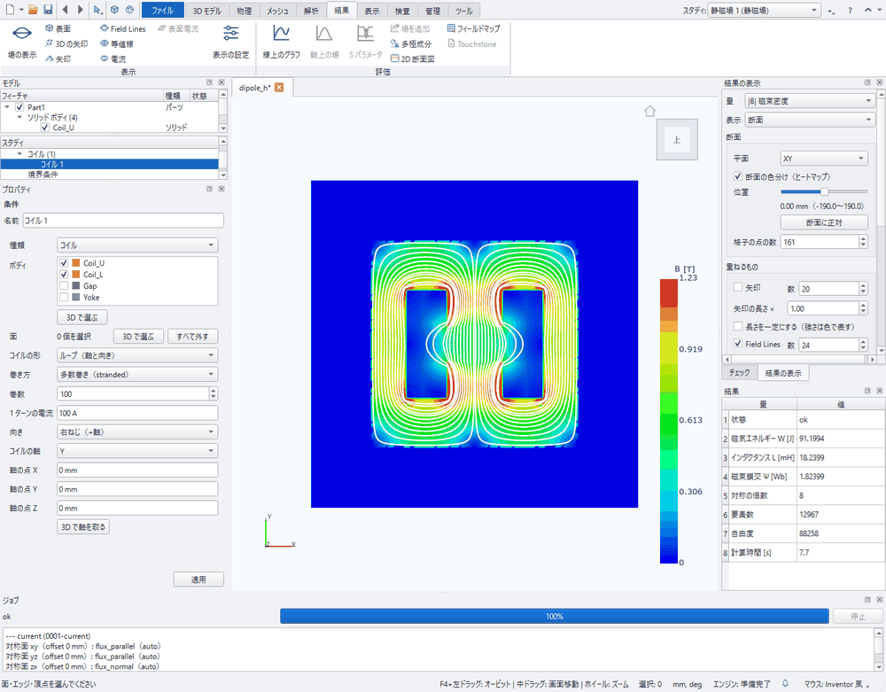

第 14 章
電磁場解析のはじめに
この章では、EMRM-Studio の電磁場解析のしくみ（形状とスタディ）、スタディの種類と選び方、解析の流れ、電磁場解析で使う画面の部品、例題を説明します。読み終えると、解きたいものに合うスタディを選び、例題を開いて解けるようになります。
14.1 形状とスタディ
EMRM-Studio では、形状を CAD（第 I 部）で作り、その形状の上にスタディを作って解きます。スタディは、材料・条件・メッシュ・解析の設定をまとめた解析の設定一式です。
形状は 1 つで、スタディはいくつでも作れます。同じ空洞の形で、共振モードのスタディとポート解析のスタディを並べることもできます。
ボディ 1 つが、材料 1 つの領域です。鉄・コイル・真空など、材料の違う部分は別のボディにします。ボディの名前が領域の名前になります（第 8 章）。
スタディは文書（
.emrm）に保存されます。解析の結果とメッシュは、文書の隣の<文書名>.emrm.dataフォルダに、解析ごとに残ります。形状を変えても、スタディの設定は残ります。形状のパラメータを変えて、同じスタディで解き直せます。
14.2 スタディの種類
今の版のスタディは 4 種類です。種類によって、使える材料・条件・解析の設定と、結果の表示が変わります。
| スタディ | 求めるもの | 主な結果 | 章 |
|---|---|---|---|
| 静磁場 | コイルの電流がつくる磁場 | B・H、磁気エネルギー、インダクタンス、多極成分、鉄の飽和 | 第 18〜20 章 |
| 共振モード | 空洞の固有モード（周波数の低い順） | 周波数、Q0、E・H、加速電圧・T・R/Q・Epk/Eacc・Bpk/Eacc、表面電流 | 第 21 章 |
| ポート解析 | 導波管・同軸のポートから入射したときの周波数応答 | S パラメータ、共振の f0・Qe・Q0・QL・β、周波数ごとの場 | 第 22 章 |
| 静電場 | 電極の電位がつくる電場 | φ・E・D、電極の電荷・電極間の容量、表面の最大電界 | 第 23 章 |
| 電子銃 | 陰極から出るビーム（空間電荷と自己磁場を含む） | ビーム電流、パービアンス、軌道、ρ、包絡線、エミッタンス | 第 24 章 |
静磁場
電磁石・ソレノイド・ステアリングなど、直流の電流がつくる磁場を解きます。鉄（磁性体）は比透磁率一定でも、B-H 曲線の飽和ありでも扱えます。形状のまわりの空気は自動で作ります（解析領域）。コイルは、軸のまわりを回るループ・断面で決めるループ・端子付きの導体で指定します。


共振モード
加速空洞などの固有モードを、周波数の低い順に求めます。形状は空洞の内側（真空・誘電体）をボディで作り、ボディの外面が導体の壁になります。壁の損失から無負荷 Q を、ビーム軸の上の場から加速電圧・走行時間因子・R/Q などの加速器の指標を求めます。


ポート解析
導波管・同軸のポートから入射したときの周波数応答を求めます。周波数をスイープして S パラメータを出し、空洞なら共振点の f0 と外部 Q（Qe）・内部 Q（Q0）・負荷 Q（QL）・結合係数 β を求めます。カプラー空洞のような 1 ポートでも、入力と出力のある 2 ポート以上でも使えます。


静電場
電子銃の電極・静電偏向器など、電極の電位がつくる電場を解きます。電極にするボディ（または面）に電位を与え、絶縁物は比誘電率の誘電体にします。静磁場と同じく、形状のまわりの空気は自動で作ります。電極ごとの電荷と電極間の容量、電極の表面の最大電界を求めます。


電子銃
熱陰極の電子銃のビームを解きます。静電場の電極に放出面を足したもので、陰極から出る空間電荷制限の電流と電子の軌道を、ビームの空間電荷とビームがつくる自己磁場とともに、収束するまで繰り返し解きます。集束の磁場は、静磁場のスタディの結果を参照できます（第 24 章）。


14.3 スタディの選び方
設計したいものから、使うスタディを選びます。
| 設計したいもの | スタディ | 見る結果 |
|---|---|---|
| 電磁石のギャップの磁場・場の質 | 静磁場 | 断面の B、線上のグラフ、多極成分 |
| コイルのインダクタンス・コイルどうしの結合 | 静磁場 | インダクタンス、インダクタンス行列 |
| 鉄の飽和・励磁曲線 | 静磁場（B-H 曲線の飽和あり） | 飽和度、増分インダクタンス |
| 空洞の共振周波数・Q・R/Q | 共振モード | モード表、軸上の場、表面電流 |
| カプラーの結合の強さ（Qe・β） | ポート解析（共振探索） | f0・Qe・Q0・QL・β、U/P_inc |
| 導波管の部品・結合空洞の通過特性 | ポート解析 | S パラメータ（大きさ・位相） |
| 電子銃・高電圧の電極の電場、放電の起きやすい所 | 静電場 | 断面の φ・E、電極の表面の電界、表面の最大電界 |
| 電極間のコンデンサの容量 | 静電場 | 電極間の容量 C(a–b)・C(a–接地) |
| 電子銃のビーム電流・ビームの大きさ・エミッタンス | 電子銃 | ビーム電流、パービアンス、軌道、包絡線、断面の統計 |
14.4 解析の流れ
どのスタディも、次の順に進めます。リボンのタブも、この順に並んでいます。
- 形状材料ごとに別のボディを作る（［3D モデル］）
- スタディ種類を選んで作る（［物理］）
- 材料と領域材料を定義して、ボディに割り当てる
- 条件コイル・電極・放出面・電気壁・磁気壁・ポート・ビーム軸
- 対称面・メッシュ必要なら対称面で切り、要素の大きさを決める（［メッシュ］）
- チェック設定の誤りと注意を確かめる
- 実行子プロセスで解く（［解析］）
- 結果断面・表面・矢印・グラフ・表（［結果］）
次のことを守ると、つまずきません。
ボディどうしを重ねません。重なった所は、体積の小さいボディの領域になります。
プロパティ パネルで値を変えたら、［適用］を押します。押さないと、スタディの設定に入りません。
長さは mm、電流は A です。欄には
100 A・5 mm・1.3 GHzのように単位を付けて書けます。文書のパラメータを使った式（2*I_main）も書けます（第 10 章）。静磁場・静電場・電子銃では、まわりの空気は自動で作ります（自分で作らない）。共振モードとポート解析では、空洞の内側（真空）をボディで作ります。
14.5 電磁場解析の画面
電磁場解析では、CAD の画面（第 1 章）に、スタディのための部品が加わります。


| 場所 | 内容 |
|---|---|
| リボンのタブ | ［物理］・［メッシュ］・［解析］・［結果］。作業の順に並びます。スタディの種類に合わないコマンドは押せません |
| スタディの選択（リボンの右上） | 今の作業の対象のスタディ。［+］のメニューから新しいスタディを作ります |
| スタディのブラウザ（左） | スタディの項目のツリー（材料・領域・条件・対称・メッシュ・解析の設定・結果）。行を選ぶと、プロパティ パネルで編集できます。右クリックで項目を足せます |
| チェック・結果の表示（右上） | タブで切り替えます。［チェック］は設定の誤りと注意、［結果の表示］は量・断面・色などの表示の設定です |
| 結果（右下） | 数値の表。共振モードではモード表、ポート解析では場を保存した周波数の表が上に出ます |
| ジョブ（下） | 実行中の解析の進み具合・［停止］・ログ |
| 中央のタブ | 3D ビューのほか、グラフ（線上のグラフ・多極成分・S パラメータなど）のタブが増えます |
［物理］・［メッシュ］・［解析］のタブでは、ボディを材料の色で塗り、スタディで選んだ項目のボディだけを濃く表示します。［3D モデル］のタブに戻ると、ふだんの表示に戻ります。パネルの出し入れと初期配置は、CAD と同じです（第 1 章）。
14.6 例題
リポジトリの examples/ フォルダに、形状と設定の済んだ例題があります。開いてリボンの［解析］タブ → ［実行］パネル → ［実行］を押すだけで解けます。
| ファイル | 内容 | 章 | 解析の時間 |
|---|---|---|---|
solenoid.emrm | 厚いソレノイド（内径 40・外径 60・長さ 50 mm、50 ターン × 100 A）。静磁場、1/8 モデル | 第 15 章 | 約 10 秒 |
dipole_h.emrm | H 型双極電磁石（鉄のヨーク、ギャップ 50 mm、レーストラックのコイル 2 つ）。静磁場、1/8 モデル | 第 20 章 | 約 20 秒 |
pillbox_cavity.emrm | ビームパイプ付きのピルボックス空洞（直径 200・長さ 100 mm）。共振モード、1/8 モデル、4 モード | 第 21 章 | 約 15 秒 |
coupler_cavity.emrm | 直方体の空洞にアイリスで導波管をつないだカプラー空洞。ポート解析、1 ポート、適応スイープと共振探索 | 第 22 章 | 約 30 秒 |
electron_gun.emrm | 電子銃の電極（陰極・ウェーネルト・陽極）。静電場、1/4 モデル、外面は接地 | 第 23 章 | 約 10 秒 |
electron_gun_beam.emrm | 電子銃（陰極・ウェーネルト・陽極と放出面）。電子銃、1/4 モデル、外面は接地 | 第 24 章 | 約 1 分 |
例題は、リボンの［ファイル］の［開く］か、起動のときの --open で開きます。
python -m emrm --open examples\solenoid.emrm